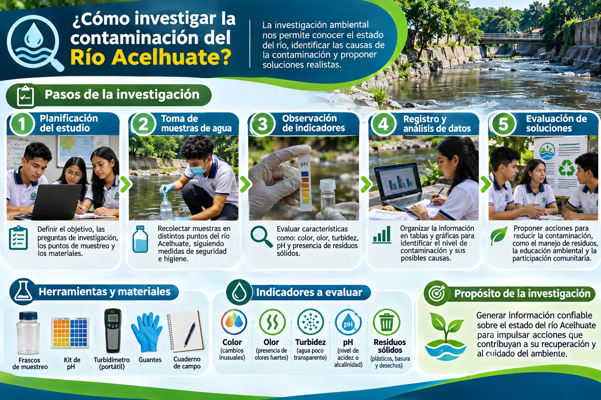
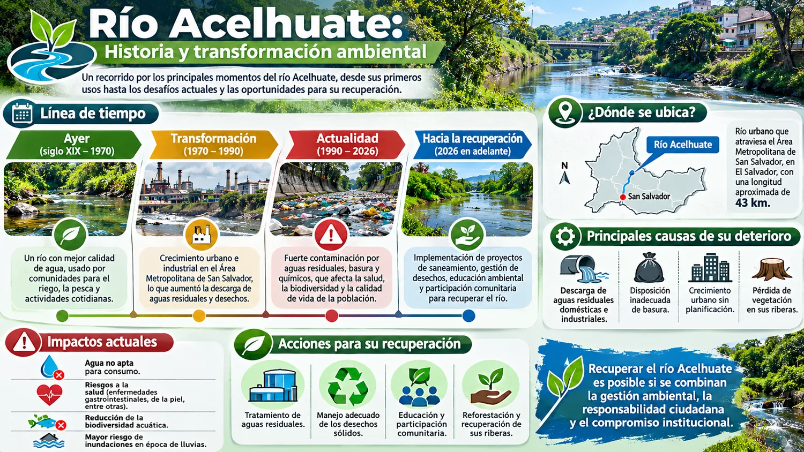
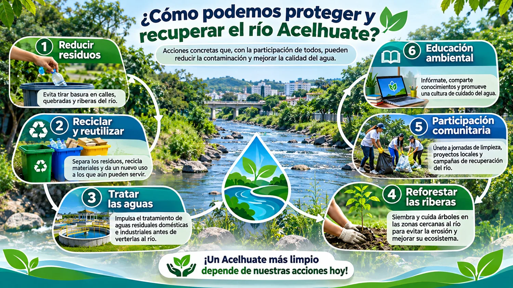

Reportaje
Contaminación y revitalización del Acelhuate
Permite observar problemas visibles y compararlos con datos oficiales.
Biblioteca multimedia
Un recurso adquiere valor cuando se identifica su autor, fecha, territorio, propósito y limitaciones.
Videos seleccionados
Los videos complementan la lectura; no sustituyen las fuentes técnicas ni las mediciones.
Permite observar problemas visibles y compararlos con datos oficiales.
Introducción a las etapas que reducen contaminantes antes de devolver el agua al ambiente.
Invita a reflexionar sobre prevención, uso responsable y corresponsabilidad.
Galería educativa



Las ilustraciones de esta galería fueron generadas con apoyo de inteligencia artificial en 2026 y tienen finalidad educativa. No sustituyen mapas oficiales ni fotografías documentales.
Fuentes para profundizar
Conceptos fundamentales sobre generación, manejo y tratamiento.
Abrir recurso ↗Curso oficial · MARNPrevención, clasificación y responsabilidad en el manejo de desechos.
Abrir recurso ↗Galería documentalFotografías para observar lugares y momentos específicos con sus créditos.
Abrir recurso ↗Documento técnico · 2011Diagnóstico histórico del MARN con tablas, mapas y antecedentes.
Abrir recurso ↗Antes de compartir